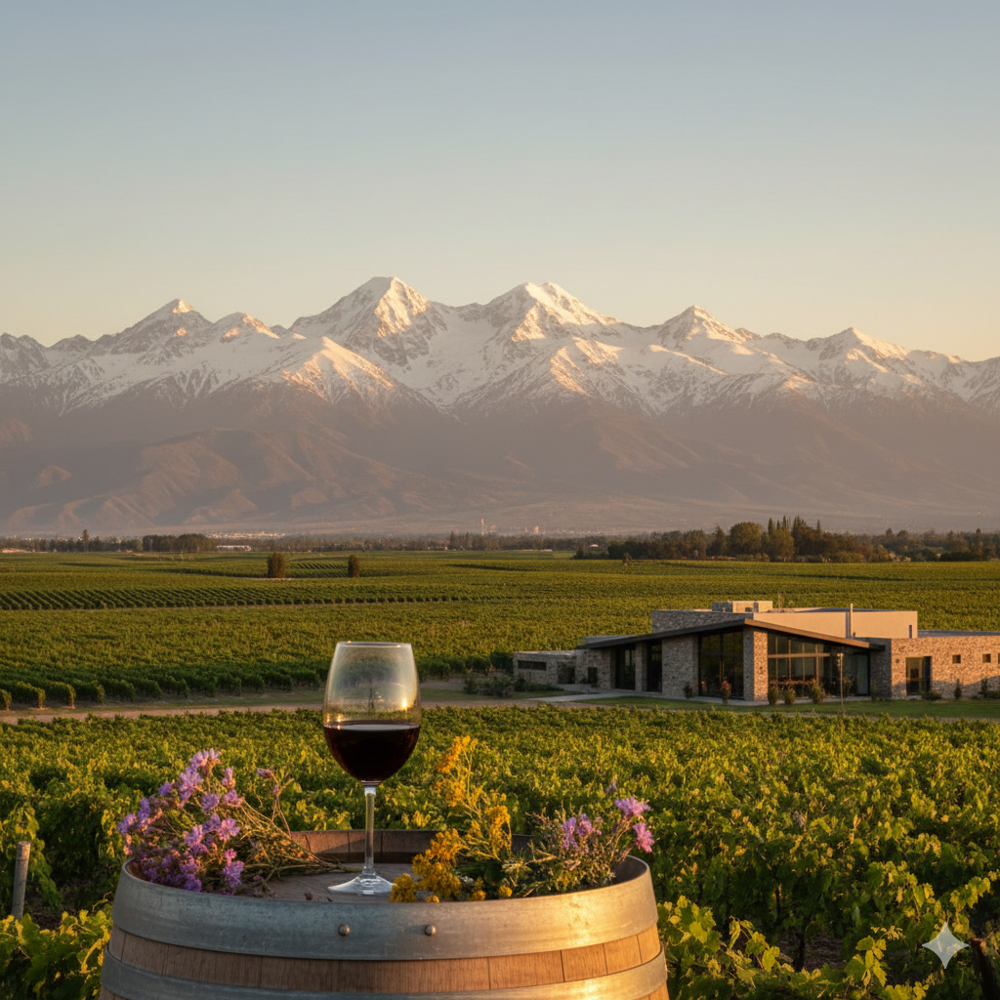

Valle de Uco (Mendoza)
Clima/Altitud: andino, seco; 900–1.500 m s. n. m.
Perfil: Malbec vibrante, fruta negra/violeta, buena acidez; blancos tensos y minerales.
Bodegas:
- Salentein
- Andeluna
- Domaine Bousquet
- Zuccardi Valle de Uco
 Guía de Vinos para Principiantes
Guía de Vinos
Guía de Vinos para Principiantes
Guía de Vinos
Clima/Altitud: andino, seco; 900–1.500 m s. n. m.
Perfil: Malbec vibrante, fruta negra/violeta, buena acidez; blancos tensos y minerales.
Bodegas:
Clima/Altitud: templado-seco; 900–1.100 m s. n. m.
Perfil: Malbec redondo, fruta madura, taninos dulces; estilos clásicos.
Bodegas:
Clima/Altitud: gran amplitud térmica; 1.600–2.000+ m s. n. m.
Perfil: Torrontés muy aromático y fresco; tintos con nervio.
Bodegas:
Clima/Altitud: extremo de altura; 2.200–3.000+ m s. n. m.
Perfil: tintos intensos, especiados, acidez firme; carácter de altura.
Bodegas:
Clima/Altitud: frío y ventoso; altitud baja-media.
Perfil: Pinot Noir y Merlot ligeros; Chardonnay nítido.
Bodegas:
Clima/Altitud: patagónico, seco y ventoso; meseta.
Perfil: tintos prolijos con buena frescura; blancos expresivos.
Bodegas: